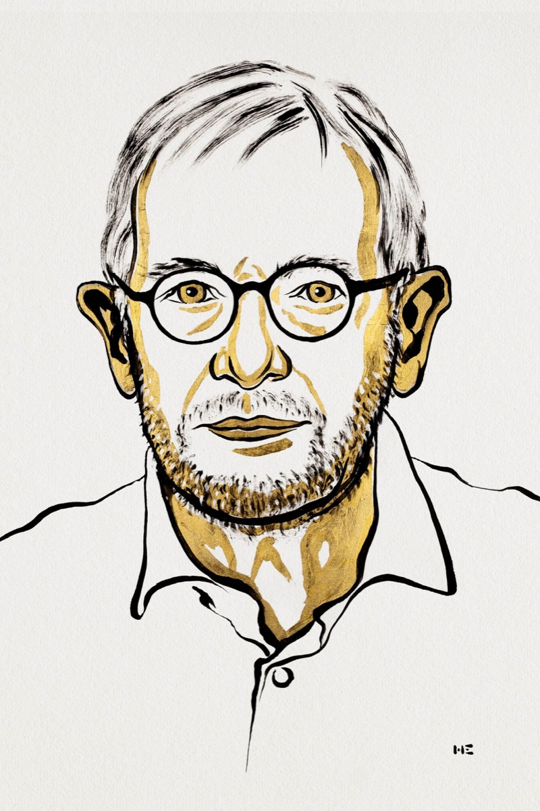
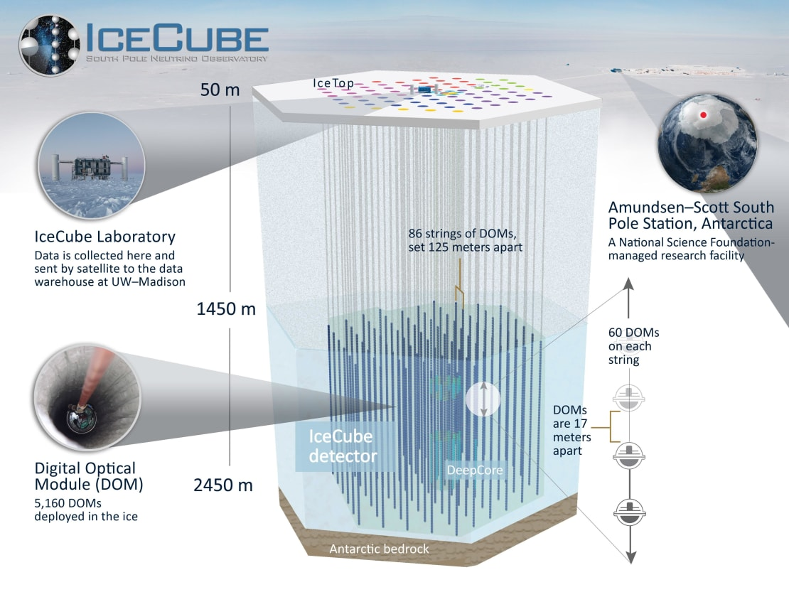

The 2026 Nobel Prize in Physics: Turning Antarctic Ice into a Telescope

“I have done a terrible thing. I have postulated a particle that cannot be detected.”
Wolfgang Pauli reportedly said this in 1930, when he proposed the neutrino. Almost a century later, Francis Halzen has won the 2026 Nobel Prize in Physics “for decisive contributions to the IceCube Neutrino Observatory and the discovery of high-energy neutrinos of astrophysical origin.” He helped turn Antarctic ice into a telescope for these ghost particles. I made a short reel about it on Instagram, and I'm writing this post because the story holds lessons I don't want to leave in a short video.
The puzzle: why would a neutrino interact with ice?
Neutrinos can cross the universe and pass straight through the Earth. So why would one interact with ice?
When we say neutrinos “don't interact,” we are simplifying. Neutrinos have no electric charge, so they don't feel the electromagnetic force behind most everyday contact. They do feel the weak nuclear force; the probability of an interaction is just incredibly small. Ice isn't special in that respect, either. Neutrinos can interact with water or rock too.
Halzen's idea was to use a huge amount of ancient, untouched, clear Antarctic ice, tens of thousands of years old (roughly 34,000 to 100,000 years at the depths where IceCube's sensors sit). A big enough volume gives neutrinos more opportunities to interact, and clear ice makes the results visible.
How IceCube works

Together with an international team, Halzen helped build IceCube: thousands of light sensors spread through a cubic kilometre of ice at the South Pole. (The Nobel Committee counts 5,160 sensors on 86 cables.)
Most neutrinos pass through unnoticed. Occasionally, one hits an atomic nucleus and produces fast-moving charged particles. Those particles emit a faint blue glow called Cherenkov light. The sensors pick up that glow, which lets scientists work out the neutrino's energy and direction, and investigate where it came from. The transparent ice does two jobs at once: it supplies atoms for the neutrinos to hit, and it gives the light a clear path to the sensors.
The lessons I take from this story
The physics is beautiful, but the story behind the prize matters just as much to me. Here is what I take away from it.
1. Pursuing an unconventional idea takes belief in yourself, even when success is uncertain. Halzen first presented the concept of an observatory in the South Pole ice in 1988. No one had ever built a neutrino telescope in ice, and the particle it was meant to catch was famous for being nearly undetectable.
2. Expect years of hardship. The first attempts to lower light sensors into the glacier came in 1992, and the first results were disappointing: bubbles in the shallow ice scattered the light and blurred the signal. The team kept going, and found that below about 1,400 metres the ice is remarkably pure and clear. Even then, the first detector, AMANDA, worked as designed but couldn't catch the highest-energy cosmic neutrinos. It needed a far bigger volume, which became IceCube. IceCube reached its full size in 2011, and the first evidence of cosmic neutrinos came in 2013. That is roughly twenty-five years from idea to discovery, and all the practical work had to happen in the short Antarctic summer.
3. See the project through. Halzen didn't give up. He stayed on as principal investigator, first for AMANDA and then for IceCube, and carried the work from concept to measurements and results.
4. Nobody does this alone. The project needed a community willing to build with him: physicists, engineers, and glaciologists, who taught the team how to melt kilometre-deep holes with hot water. It needed the research station already at the South Pole, and it needed an international collaboration. A bold idea only becomes a discovery when other people believe in it enough to build it with you.
5. Fundamental science needs patient funding. No one could promise a return in five years, or even in ten. This work needed funding agencies willing to support an ambitious, uncertain bet for decades. We can't know in advance which question will open a new window on the universe, and that kind of payoff only comes if someone funds the question before the answer is in sight. Even the by-products matter: along the way, the project taught researchers a great deal about the properties of ice at different depths.
And the story isn't over. IceCube has already traced neutrinos to distant galaxies and to our own Milky Way, and the next stage, IceCube-Gen2, is being planned at eight cubic kilometres of ice.
A particle once feared undetectable became a messenger from the universe. And Antarctic ice became a way to listen.